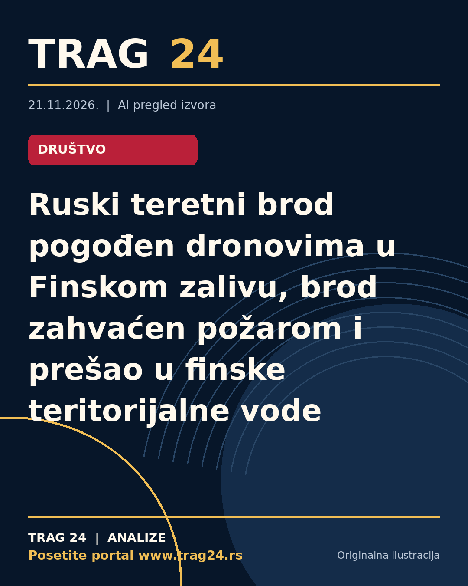

Ruski teretni brod pogođen dronovima u Finskom zalivu, brod zahvaćen požarom i prešao u finske teritorijalne vode

ŠTA SE DOGODILO
Ruski teretni brod, koji se kretao ka Kalinjingradu, pogođen je dronovima u međunarodnim vodama Finskog zaliva, oko tri nautičke milje od ruske granice. Nakon napada na brodu je izbio požar, koji je doveo do njegovog oštećenja i prelaska broda u finske teritorijalne vode. Posada je evakuisana, a u toku je procena štete i pripreme za eventualne spasilačke operacije.
HRONOLOGIJA
Incident se dogodio danas, pri čemu je brod napadnut dronovima, o čemu su prve informacije dale ruske vlasti. Guverner Lenjingradske oblasti Aleksandar Drozdenko naveo je da su korišćena dva drona. Usled požara i eksplozija na brodu, on je prešao iz međunarodnih u teritorijalne vode Finske. Finska je iz predostrožnosti pojačala odbranu i uvela privremena ograničenja za vazdušni i pomorski saobraćaj u tom delu zaliva. Izvori navode i da je iznad Lenjingradske oblasti oboreno 80 bespilotnih letelica.
ŠTA NAVODE IZVORI
Ruski zvaničnici tvrde da je brod Sparta II napadnut dronovima u neutralnim vodama i da je posada bezbedno evakuisana. Finska Ministarstvo odbrane i granična služba navode da situacija ne predstavlja opasnost za ostali pomorski saobraćaj i da se pripremaju za moguće spasilačke akcije. Estonska policija je potvrdila informacije o požaru i eksplozijama na brodu. Zvaničnik Kalinjingradske oblasti izjavio je da incident ne ugrožava snabdevanje regiona.
ŠTA JE POTVRĐENO
Potvrđeno je da je ruski teretni brod pogođen dronovima u Finskom zalivu, da je došlo do požara i eksplozija na brodu, te da se brod potom našao u finskim teritorijalnim vodama. Posada je evakuisana, a Finska je zbog incidenta pojačala svoju odbranu i uvela privremena ograničenja saobraćaja u tom delu zaliva.
ŠTA NIJE POTVRĐENO
Nije potvrđeno ko stoji iza napada na brod, niti su date dodatne informacije o tome da li je incident imao za cilj neko šire političko ili vojne posledice. Takođe, nema potvrde o obimu štete na brodu ili o uzrocima eksplozija, pored navoda o dronovima kao sredstvu napada.
ŠTA OSTАJE OTVORENO: Ostaje nejasno ko je odgovoran za napad i koji su tačni motivi iza incidenta. Nije poznato da li će biti sprovedena dalja istraga ili diplomtatske reakcije. Takođe nije rasvetljeno da li će ovaj događaj uticati na sigurnosnu situaciju u regionu i odnose Rusije sa Finskom i susednim zemljama.
Izvori
- https://www.danas.rs/svet/finski-zaliv-rusija-brod-pogodjen/
- https://n1info.rs/svet/ruski-zvanicnici-teretni-brod-napadnut-dronovima-u-finskom-zalivu/
- https://insajder.net/prenosimo/guverner-lenjingradske-oblasti-teretni-brod-na-putu-ka-kalinjingradu-napadnut-dronovima
Ova analiza je pripremljena uz pomoć veštačke inteligencije na osnovu javno dostupnih izvora. Navodi izvora nisu nužno nezavisno potvrđeni.